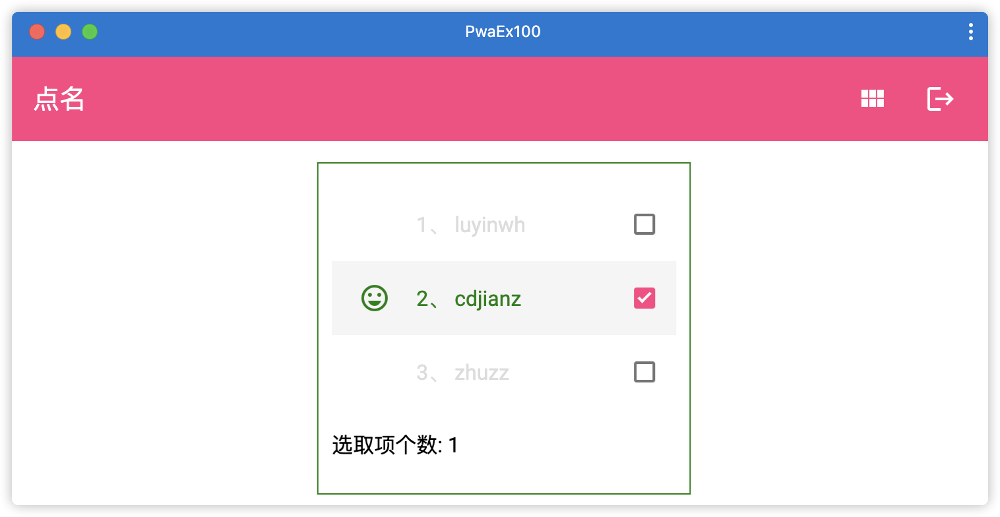

23 Angular与渐进式WEB应用¶
一直以来，WEB应用程序的竞争对手就是原生应用程序。尤其在在用户体验上，WEB应用在一直努力提升首页渲染的速度，动画的流畅度，虽然有很多方式和方法的优化，性能确实有不小的提升，但是无论怎么优化，还是比原生应用程序要差很多。在访问速度上，原生应用程序安装完毕后会在用户桌面上有一个入口，让用户打开App只需一次点击，而WEB应用程序，必须先要打开浏览器，然后输入或者点击收藏夹里面的网址才能达到WEB站点。原生应用程序可以缓存网络资源，在没有网络的情况下，依然可以看到部分缓存过的内容。
上述场景就是渐进式WEB应用程序发挥作用的地方。渐进式WEB应用程序的出发点就是为了减少与原生应用程序直接的差距，同时还提供了一些优于原生应用的功能。它利用了一些当前的浏览器技术，以提供流畅的用户体验，即使在几乎没有网络连接的情况下，也能提供流畅的用户体验。它们使用一些核心技术，如Service Worker来拦截网络请求并缓存响应，使用Manifest技术，让WEB应用程序也能像原生应用一样被安装在客户的桌面，甚至更简单和直接等。
23.1 什么是渐进式WEB应用¶
渐进式WEB应用（Progress Web Application），简称PWA。Google 提出 PWA 的时候，并没有给它一个准确的定义，它不是特指某一项技术，而是应用多项技术来改善用户体验的 Web App，其核心技术包括 Web App Manifest，Service Worker，Web Push 等，用户体验才是 PWA 的核心。
PWA是一套使用现代浏览器功能的准则，它创建的WEB应用程序使用现代浏览器的功能，提供了非常贴近原生应用的用户体验。虽然它依然是一个WEB应用，但它的外观和感觉就像一个本地的原生应用程序，并提供了普通WEB应用程序所不具备的功能。当用户在浏览器中通过URL访问PWA时，将会得到一个提示，提示用户是否需要 “添加到桌面”，而不需要从应用商店下载和安装。当用户从桌面上打开PWA时，使用效果同原生应用程序一样，直接在本地呈现WEB应用页面。
23.2 了解PWA的核心技术¶
前面提到，PWA的核心是用户体验，能让PWA达到原生应用的体验并不仅仅依赖于某一项技术，而是多管齐下，进行改进，从而在安全、性能和体验上都获得很大的提升。下面将简单介绍几个PWA应用中经常使用到的技术，后面的章节会进行更详细的讲解。
23.2.1 Manifest技术¶
通过Manifest技术可以将WEB应用程序安装在桌面，可以定义用户添加到主屏的图标、应用名称等。Manifest允许开发者配置隐藏浏览器多余的 UI（地址栏、导航栏、菜单等），让 PWA 具有和原生应用程序一样的沉浸式体验。
23.2.2 Service Worker技术¶
Service Worker可以翻译为服务工作线程，本书为了消除歧义，保持原状。Service Worker是浏览器在后端独立于网页主进程运行的脚本，它可以拦截网络请求，可以操作本地缓存，还可以接受服务器推送的离线消息。Service Worker是一个特殊的线程，独立于当前网页主线程，有自己的执行上下文。一旦被安装，就持续存在，除非取消注册。Service Worker技术必须在 HTTPS 环境下才能工作。
23.2.3 离线通知技术¶
离线通知其实是Service Worker的功能。离线通知是指在用户没有打开 PWA应用的情况下，也能接受到服务器推送过来的通知，并呈现给用户，其中包括了两部分，离线推送和呈现通知，分别是 Web Push 和 Notification API。浏览器在接受到服务中心推送过来的离线消息时，会唤醒已经注册的 Service Worker，开发者可以通过Service Worker处理接受到的请求，显示通知。
23.2.4 App Shell技术¶
App Shell 是 PWA 界面展示所需的最小资源集合，即让页面能够正常运行起来的最小的 HTML、CSS 和 JavaScript 等静态资源集，每个页面都需要加载这一部分资源。利用 Service Worker 把这部分资源缓存在本地，就能够在打开 PWA 时不需要从服务器端获取这部分资源，从而能够瞬间渲染出页面框架，不仅提升了首页的速度，还减小了服务器流量的消耗。简单的说，App Shell技术能够缩短用户进入页面时的等待时间。
23.3 PWA的优势和最低要求¶
技术的发展是循序渐进的，从Google提出PWA以后，PWA取得的成绩有目共睹。随着标准的进一步完善，国内外各大浏览器都会逐步支持，向标准靠拢。除了Google的Chrome浏览器支持PWA外，苹果公司从iOS 11.3版本开始在Safari上支持Service Worker，iOS 12.2 版本修复了PWA 很多致命的体验问题，支持了Web Share API等。下面列举关于PWA的优势和最低要求。
23.3.1 PWA的优势有哪些¶
PWA有与传统的WEB应用相比有下面这些优势：
即使在网络不稳定甚至断网的环境下，也能瞬间加载并展现；
快速响应，加载速度快，具有平滑的过渡动画及用户操作的反馈；
始终是最新的，无版本和更新问题。服务器更新过程中，会始终保持APP的最新动态；
和原生应用程序一样，可以被添加到桌面，能接受离线通知，具有沉浸式的用户体验，无需下载和安装；
通过HTTPS访问，允许授权、安全交易，并防止未经授权的访问。
23.3.2 PWA的最低要求¶
PWA 采用的最新技术，当前一些浏览器还没有达到完全支持的程度，很多技术在W3C还没有定稿，不过这也意味着这些技术的还有很大的想象空间。首先，需要支持Service Worker技术的浏览器；其次，服务器需要使用 HTTPS发布；最后，设计应用时，需要PWA所有的URL在断网的情况下有内容呈现。
PWA其实并不是Angular独有的技术，将Angular应用程序打造成PWA，其实就是为Angular应用程序添加 Service Worker 功能。Angular 提供了自己的 Service Worker 实现。 Angular 开发人员可以直接基于这个实现，而无需再针对底层 API 写代码。
23.4 为Angular项目添加PWA功能¶
为Angular项目添加PWA功能，分为两个步骤：
使用Angular CLI 命令：
ng add @angular/pwa为项目添加 “service-worker” 及依赖包，并会创建及配置好相关的文件，该命令自动完成了如下内容：
添加了@angular/service-worker包及依赖到项目中；
在Angular CLI 中启用了 Service Worker 的构建支持；
在根模块中导入并注册了 Service Worker；
修改了 index.html 文件：添加到manifest.json文件中的链接和为theme-color添加meta标签；
创建了PWA的桌面图标；
创建了一个名叫 ngsw-config.json 的 Service Worker 配置文件，用来配置应用缓存的行为及其他的配置。
使用Angular CLI 命令：
ng build --prod将Angular项目构建为PWA应用。
命令：
ng add @angular/pwa有个选项参数--project，通过该参数，我们可以指定转换的Angular工程，如：ng add @angular/pwa --project 项目名称通过project参数的设置，这意味着，我们可以为任何使用Angular CLI 命令生成的已有项目转换为PWA项目。
23.5 为Angular项目应用App Shell技术¶
前面介绍了App Shell技术，Angular应用是单页应用（Single Page Application），为了能减少页面跳转带来的开销，可以在页面切换时增加过渡动画，避免出现加载时的白屏。那么在页面切换时页面上固定不动的内容就是应用App Shell技术需要解决的。
如何将应用的显示内容划分为主体内容部分和外壳部分。App Shell 就是外壳部分，即页面的基本结构。App Shell 是页面能够展现所需的最小资源集合，采用 App Shell 的应用程序，每个页面都会先加载 App Shell 的内容，再由 App Shell 根据当前页面 URL 渲染对应的主体内容。
Angular项目借助路由渲染应用App Shell技术，因此需要确保Angular项目中已经启用了RouterModule模块，且在应用中使用了<router-outlet>路由出口。
Angular项目满足上述条件后，为项目添加App Shell技术功能，分为两个步骤：
使用Angular CLI 命令为项目添加App Shell，具体命令如下：
ng generate app-shell执行上述命令后，控制台输出下列信息：
$ ng generate app-shell CREATE src/main.server.ts (298 bytes) CREATE src/app/app.server.module.ts (590 bytes) CREATE tsconfig.server.json (308 bytes) CREATE src/app/app-shell/app-shell.component.css (0 bytes) CREATE src/app/app-shell/app-shell.component.html (24 bytes) CREATE src/app/app-shell/app-shell.component.ts (286 bytes) UPDATE package.json (1470 bytes) UPDATE angular.json (5832 bytes) UPDATE src/main.ts (432 bytes) UPDATE src/app/app.module.ts (903 bytes) ✔ Packages installed successfully.查看angular.json配置文件，里面已经增加了一些节点信息，如：“app-shell”节点。
使用App Shell技术构建Angular应用程序内容，具体命令如下：
ng run app-name:app-shell # app-name 是项目名称上述命令中，还可以添加环境参数，如：
ng run app-name:app-shell:production。执行上述命令后，在dist/app-name/的目录下，将会生成2个文件夹：browser和server文件夹。要验证构建的输出，可以打开dist/app-name/browser/index.html文件，里面可以找到默认的文本 app-shell works! 这就表示App Shell技术已经借助路由渲染出来内容了。
23.6 Angular与Service Worker通讯¶
前面提到为Angular项目添加PWA功能时，在Angular项目的根模块中导入了ServiceWorkerModule，并注册了 Service Worker。ServiceWorkerModule模块中提供了一些服务，可以让开发者能和 Service Worker 通讯，如：检查更新、强制激活更新，控制应用的缓存等。
ServiceWorkerModule中提供了一个SwUpdate服务，SwUpdate 服务支持下面的操作：
要求 Service Worker 向服务器查询是否有新版本，如果要刷新页面，这些就是可加载的新版本。
要求 Service Worker 为当前页面激活该应用的最新版本。
下面是一个演示SwUpdate服务的代码示例：
import { Injectable } from '@angular/core'; import { SwUpdate } from '@angular/service-worker'; @Injectable({ providedIn: 'root' }) export class CheckUpdateService { constructor(updates: SwUpdate) { // 有可用的更新 updates.available.subscribe(event => { console.log('当前的版本', event.current); console.log('服务器上最新的版本', event.available); }); // 已激活的更新 updates.activated.subscribe(event => { console.log('上一个版本', event.previous); console.log('当前的版本', event.current); }); } }
透过上述代码，用户可以在具体的方法中添加具体的业务逻辑，关于Service Worker提供的技术有很多，本书仅是引导读者了解下入门的基础。
下面我们看一个在实际应用中的示例，完成一个培训学校点名系统，并将该应用转换为PWA应用程序。
23.7 [示例 pwa-ex100] 实战打造一个培训学校点名系统¶
本示例中的UI来自Angular Material的组件库，因此，需要准备及创建一个Angular工程，且安装好Angular Material的依赖包。
23.7.1 创建Angular工程¶
用Angular CLI构建应用程序，具体命令如下：
ng new pwa-ex100 -S --routing --defaults=true
在项目根目录下启动服务，具体命令如下：
ng serve
查看应用程序结果。打开Web浏览器并浏览到 “http://localhost:4200”，应该看到文本 “Welcome to pwa-ex100!”。
23.7.2 安装Angular Material依赖¶
安装 Angular Material，具体命令如下：
ng add @angular/material --defaults=true # defaults=true 表示问答时选择默认值
新建Material模块，具体命令如下：
ng g m material --route main --module app
查看应用程序结果。打开Web浏览器并浏览到 “http://localhost:4200/main”，在页面的底部应该可以看到文本 “material works!”。
在上面的步骤中，完成了以下内容：
安装了Angular Material依赖库；
新建了一个带路由功能的Material模块，同时，在根模块中通过延迟加载特性加载Material模块，默认延迟加载的子路由路径为“main”；
本应用中，单独新建的Material模块主要用来存放Angular Material的组件。
23.7.3 准备后端RestFull API服务¶
考虑到，本应用程序最终将会生成PWA应用，因此，我们选择使用json-server创建RestFull API服务，方便模拟PWA应用程序与网络隔离。而且，后续部署时，也可以方便切换到其他的URL地址。
新建一个data文件夹，在data文件夹中创建一个db.json的文件，并将其更改为以下内容：
{ "students": [ { "id": 1, "name": "luyinwh", "css": "my-selected1", "icon": "" }, { "id": 2, "name": "cdjianz", "css": "my-selected1", "icon": "" }, { "id": 3, "name": "zhuzz", "css": "my-selected1", "icon": "" } ] }
启动json-server，使用如下命令：
cd data json-server db.json
查看RestFull API服务的结果。打开Web浏览器并浏览到 “http://localhost:3000/students”，在页面应该可以看到上面定义的JSON格式的数据。
23.7.4 设计数据模型¶
结合上述RestFull API服务返回的信息，我们定义1个接口类，用来表示返回的数据模型。
创建学生数据模型接口，具体命令如下：
ng g i student
编辑学生数据模型接口。编辑文件src/app/student.ts，并将其更改为以下内容：
export interface Student { id: number; name: string; css: string; icon: string; }
在上面的步骤中，Student接口中的字段名与RestFull API服务返回的对应字段名完全匹配。
23.7.5 创建页面布局¶
本示例点名系统的界面分为上下两个部分，上面是工具栏，下面是具体的数据呈现；数据呈现部分分别对应两个独立的页面：列表和卡片页面。用户可以点击工具栏中的图标可以进行页面切换。因此，点名系统将要应用Angular Material的工具栏，卡片以及列表等组件，我们将这些UI组件都统一添加在Material模块中。
创建列表和卡片组件，具体命令如下：
ng g c material/user-list ng g c material/user-card
添加Angular Material组件模块的依赖。编辑文件src/app/material/material.module.ts，并将其更改为以下内容：
import { NgModule } from '@angular/core'; import { CommonModule } from '@angular/common'; import { MaterialRoutingModule } from './material-routing.module'; import { MaterialComponent } from './material.component'; import { MatToolbarModule } from '@angular/material/toolbar'; import { MatIconModule } from '@angular/material/icon'; import { UserListComponent } from './user-list/user-list.component'; import { MatListModule } from '@angular/material/list'; import { UserCardComponent } from './user-card/user-card.component'; import { MatCardModule } from '@angular/material/card'; import { MatGridListModule } from '@angular/material/grid-list'; @NgModule({ declarations: [MaterialComponent, UserListComponent, UserCardComponent], imports: [ CommonModule, MaterialRoutingModule, MatToolbarModule, // 工具栏 MatIconModule, // 图标 MatListModule, // 列表 MatCardModule, // 卡片 MatGridListModule ] }) export class MaterialModule { }
编辑根模块，增加HttpClientModule。编辑文件src/app/app.module.ts，并将其更改为以下内容：
import { BrowserModule } from '@angular/platform-browser'; import { NgModule } from '@angular/core'; import { AppRoutingModule } from './app-routing.module'; import { AppComponent } from './app.component'; import { BrowserAnimationsModule } from '@angular/platform-browser/animations'; import { HttpClientModule } from '@angular/common/http'; @NgModule({ declarations: [ AppComponent ], imports: [ BrowserModule, AppRoutingModule, BrowserAnimationsModule, HttpClientModule // HttpClient服务 ], providers: [], bootstrap: [AppComponent] }) export class AppModule { }
新建服务。使用命令
ng g s user新建服务，并将文件src/app/user.service.ts更改为以下内容：
import { Injectable } from '@angular/core'; import { Student } from './student'; import { BehaviorSubject, Observable } from 'rxjs'; import { HttpClient } from '@angular/common/http'; @Injectable({ providedIn: 'root' }) export class UserService { private inventorySubject$ = new BehaviorSubject<Student[]>(null); constructor(private http: HttpClient) { } private studentUrl = 'http://localhost:3000/students'; // RESTFul API地址 getUsers(): Observable<Student[]> { return this.http.get<Student[]>(this.studentUrl); // 指定响应类型为Student接口数组 } getLatestInventory(): Observable<Student[]> { return this.inventorySubject$.asObservable(); } addToInventory(t: Student[]) { this.inventorySubject$.next(t); } }
编辑Material组件。编辑文件src/app/material/material.component.ts，并将其更改为以下内容：
import { Component, OnInit } from '@angular/core'; import { Router } from '@angular/router'; import { UserService } from '../user.service'; @Component({ selector: 'app-material', templateUrl: './material.component.html', styleUrls: ['./material.component.css'] }) export class MaterialComponent implements OnInit { title = '点名'; view_list: boolean = true; constructor( private router: Router, private userService: UserService) { } ngOnInit(): void { this.userService.getUsers().subscribe( data => { this.userService.addToInventory(data); } ) // 获取当前的URL let currentpath = this.router.url; this.view_list = currentpath.indexOf('card') > 0 ? false : true; } changeIcon(view_list: boolean) { this.view_list = !view_list if (this.view_list) { this.router.navigate(['/main']); } else { this.router.navigate(['/main/card']); } } }
编辑Material组件模板。编辑文件src/app/material/material.component.html，并将其更改为以下内容：
<mat-toolbar color="accent"> <mat-toolbar-row> <span>{{title}}</span> <span class="example-spacer"></span> <mat-icon class="example-icon" aria-hidden="false" aria-label="list" (click)="changeIcon(view_list)"> {{view_list?"view_module":"view_list"}}</mat-icon> <mat-icon class="example-icon" aria-hidden="false" aria-label="退出">logout</mat-icon> </mat-toolbar-row> </mat-toolbar> <router-outlet></router-outlet>
编辑Material组件模板样式。编辑文件src/app/material/material.component.css，并将其更改为以下内容：
.example-icon { padding: 0 14px; } /* 工具栏图标靠右的样式 */ .example-spacer { flex: 1 1 auto; }
编辑Material模块路由。编辑文件src/app/material/material-routing.module.ts，并将其更改为以下内容：
import { NgModule } from '@angular/core'; import { Routes, RouterModule } from '@angular/router'; import { MaterialComponent } from './material.component'; import { UserListComponent } from './user-list/user-list.component'; import { UserCardComponent } from './user-card/user-card.component'; const routes: Routes = [ { path: '', component: MaterialComponent, children: [ { path: '', component: UserListComponent }, { path: 'card', component: UserCardComponent } ] } ]; @NgModule({ imports: [RouterModule.forChild(routes)], exports: [RouterModule] }) export class MaterialRoutingModule { }
编辑根模块路由。编辑文件src/app/app-routing.module.ts，并将其更改为以下内容：
import { NgModule } from '@angular/core'; import { Routes, RouterModule } from '@angular/router'; const routes: Routes = [ { path: '', redirectTo: '/main', pathMatch: 'full' }, { path: 'main', loadChildren: () => import('./material/material.module').then(m => m.MaterialModule) }]; @NgModule({ imports: [RouterModule.forRoot(routes)], exports: [RouterModule] }) export class AppRoutingModule { }
编辑根组件模板。编辑文件src/app/app.component.html，并将其更改为以下内容：
<router-outlet></router-outlet>
查看应用程序结果。打开Web浏览器并浏览到 “http://localhost:4200”，页面显示效果如图23-1所示：
{kind=link}
在上面的步骤中，完成了以下内容：
单独创建了Material模块，并在其中添加了工具栏、图标以及卡片等模块的依赖；
在UserService服务类中，我们使用了通过服务的可观察对象共享数据。使用inventorySubject$变量表示库存。getLatestInventory()方法返回库存中的最新值，addToInventory()方法表示往库存中添加数据。getUsers()方法中请求的是利用json-server创建的本地RestFull API服务；
Material组件初始化时，调用UserService服务类中的方法，往库存inventorySubject$变量中添加数据；
AppRoutingModule根路由类中修改了默认主路径，使其跳转到Material组件。
点击工具栏中的“view_list”和“view_module”图标，可以看到下方的内容在列表和卡片页面来回切换。接下来，我们开始列表和卡片页面的开发。
23.7.6 学生列表组件的开发¶
Angular Material组件库中提供了一个用于包装和格式化一系列条目列表的组件，可用来显示多行数据，并支持选取列表。选取列表组件用标签<mat-selection-list>和<mat-list-option>表示。<mat-selection-list> 是一个容器组件，用于包装和格式化一系列<mat-list-option>条目。
编辑列表组件。编辑文件src/app/user-list/user-list.component.ts，并将其更改为以下内容：
import { Component, OnInit } from '@angular/core'; import { UserService } from 'src/app/user.service'; import { Student } from 'src/app/student'; import { Observable } from 'rxjs'; @Component({ selector: 'app-user-list', templateUrl: './user-list.component.html', styleUrls: ['./user-list.component.css'] }) export class UserListComponent implements OnInit { constructor(private userService: UserService) { } students$: Observable<Student[]> ngOnInit(): void { this.students$ = this.userService.getLatestInventory(); } doStuff(user: Student) { if ("my-selected1" === user.css) { user.css = "my-selected2"; user.icon = "sentiment_very_satisfied"; } else { user.css = "my-selected1"; user.icon = "sentiment_very_dissatisfied"; } } isChecked(user: Student): boolean { if ("my-selected1" === user.css) { return false; } else { return true; } } }
编辑列表组件模板。编辑文件src/app/user-list/user-list.component.html，并将其更改为以下内容：
<div class="my-list"> <mat-selection-list #total> <mat-list-option *ngFor="let student of students$ |async" [ngClass]="student.css" [selected]="isChecked(student)" (click)="doStuff(student)"> <mat-icon mat-list-icon>{{student.icon}}</mat-icon>{{student.id}}、 {{student.name}} </mat-list-option> </mat-selection-list> <p> 选取项个数: {{total.selectedOptions.selected.length}} </p> </div>
编辑列表组件模板样式。编辑文件src/app/user-list/user-list.component.css，并将其更改为以下内容：
.my-list { min-height: 200px; margin: auto; margin-top: 1em; width: 35%; border: 1px solid green; padding: 10px; } .my-selected1{ color: gainsboro; } .my-selected2 { color: green; }
观察应用程序页面，页面显示效果如图23-2所示。
{kind=link}
在上面的步骤中，完成了以下内容：
列表组件初始化时，调用服务类的方法，获取库存inventorySubject$变量的最新值；
列表组件模板中通过[ngClass]绑定了css样式，同时单击选项时，绑定了doStuff()方法，该方法中通过判断选项当前的css样式，更新当前选项新的样式和图标；
单击列表中的项时，模板的下方通过引用模板变量#total，显示选取项的个数；
接下来，我们开始学生卡片页面的开发。
23.7.7 学生卡片组件的开发¶
同列表组件类似，卡片页面选择使用Angular Material组件库中的卡片组件，显示学生信息的布局排列。卡片组件用标签<mat-card>表示。它同列表组件一样，也是一个容器组件，卡片组件包含了若干个子选项标签，我们在下面的示例中演示。
编辑卡片组件。编辑文件src/app/user-list/user-card.component.ts，并将其更改为以下内容：
import { Component, OnInit } from '@angular/core'; import { UserService } from 'src/app/user.service'; import { Student } from 'src/app/student'; @Component({ selector: 'app-user-card', templateUrl: './user-card.component.html', styleUrls: ['./user-card.component.css'] }) export class UserCardComponent implements OnInit { constructor(private userService: UserService) { } students: Student[]; ngOnInit(): void { this.userService.getLatestInventory().subscribe( data => { this.students = data; } ) } doStuff(student: Student) { if ("my-selected1" === student.css) { student.css = "my-selected2"; student.icon = "sentiment_very_satisfied"; } else { student.css = "my-selected1"; student.icon = "sentiment_very_dissatisfied"; } } }
编辑卡片组件模板。编辑文件src/app/user-list/user-card.component.html，并将其更改为以下内容：
<div class="flex-me"> <mat-card *ngFor="let student of students" (click)="doStuff(student)" [ngClass]="student.css"> <mat-card-header> <div mat-card-avatar> <mat-icon>{{student.icon}}</mat-icon> </div> <mat-card-title>{{student.id}}</mat-card-title> <mat-card-subtitle>{{student.name}}</mat-card-subtitle> </mat-card-header> </mat-card> </div>
编辑卡片组件模板样式。编辑文件src/app/user-list/user-card.component.css，并将其更改为以下内容：
.flex-me { margin-top: 2em; display: flex; flex-flow: row wrap; justify-content: center; align-items: center; } /* 鼠标悬停在card上的样式 */ mat-card:hover { cursor: pointer; background: green; box-shadow: 0 5px 5px -3px rgba(0,0,0,.2), 0 8px 10px 1px rgba(0,0,0,.14), 0 3px 14px 2px rgba(0,0,0,.12); } .mat-card-header { justify-content: center; } .my-selected1{ color: gainsboro; } .my-selected2 { color: white; background: green; }
观察应用程序页面，页面显示效果如图23-3所示。
{kind=link}
在上面的步骤中，完成了以下内容：
卡片组件初始化时，调用服务类的方法，获取库存inventorySubject$变量的最新值；
卡片组件模板中通过[ngClass]绑定了css样式，同时单击卡片时，绑定了doStuff()方法，该方法中通过判断选项当前的css样式，更新当前卡片新的样式和图标；
卡片组件和列表组件中共享库存inventorySubject$变量的最新值，因此，列表组件中更新了学生属性的值，在卡片组件中可以看到更新后的值，反之也是一样的。
23.7.8 为应用添加PWA功能¶
为应用添加PWA功能，具体命令如下：
ng add @angular/pwa
将项目构建为PWA应用，具体命令如下：
ng build --prod
PWA功能底层使用的是Service Worker技术，由于 ng serve 对 Service Worker 无效，所以必须用一个独立的 HTTP 服务器在本地测试我们的项目。这里，我们使用http-server来作为本地开发的服务器。
安装http-server服务器，具体命令如下：
npm install -g http-server # -g表示global，意思是全局安装
本地部署PWA应用，具体命令如下：
http-server -p 8080 -c-1 dist/pwa-ex100 # -c-1 参数表示禁用缓存
观察应用程序页面，打开浏览器，输入地址：http://localhost:8080，页面正常显示，与之前本地执行
ng serve命令时显示的效果完全一样。但是，浏览器的地址栏中得到一个提示，提示用户是否需要 “添加到桌面”，页面显示效果如图23-4所示。
点击图23-4中的“+”进行安装，接着页面显示效果如图23-5所示。
图23-5 PWA应用程序界面
同时，我们的桌面上多出了一个Angular图标，如图23-6所示，这表示是PWA应用程序，看上去和桌面上的其他应用程序并没有什么区别。
{kind=link}
{kind=link}
{kind=link}
停止及断开本地的RESTFul API服务，通过桌面上的PWA应用程序图标，打开应用程序，发现，我们的PWA应用程序依然还能正常工作。
23.7.9 为应用增加App Shell技术¶
截止到目前，咱们的应用已经完成了所有的功能。接下来，演示如何使用App Shell技术，保证在页面刷新时，缩短显示白屏的时间。
使用Angular CLI 命令为项目添加App Shell，具体命令如下：
ng generate app-shell
编辑app-shell组件模板。编辑文件src/app/app-shell/app-shell.component.html，并将其更改为以下内容：
<p>演示app-shell功能</p>
使用App Shell技术构建Angular应用程序生成静态文件，具体命令如下（根据环境二选一）：
ng run pwa-ex100:app-shell # 开发环境 ng run pwa-ex100:app-shell:production # 生产环境上述命令执行完成后，在dist/pwa-ex100目录下，将会生成2个子目录：browser和server目录。browser目录下对应的应用的全部静态文件，server目录下的文件用作动态部署时的入口文件。
在开发阶段，本地可以动态部署app-shell应用，具体命令如下：
ng serve --prod上述命令将会启动本地 Node Server 服务，其入口文件是dist/pwa-ex100/server/main.js文件。部署完成后，通过地址：http://localhost:4200 访问应用。
注意
当通过地址：http://localhost:4200 访问应用时，查看页面控制台，发现有错误信息：
Service worker registration failed with: TypeError: Failed to register a ServiceWorker for scope (‘http://localhost:4200/’) with script (‘http://localhost:4200/ngsw-worker.js’): A bad HTTP response code (404) was received when fetching the script.
这是Service worker服务异常的错误信息，产生的原因是Service Worker服务必须要在HTTPS环境下才工作。
本地部署PWA应用，具体命令如下：
cd dist/pwa-ex100/browser # 进入到构建后生成的文件夹 cp index.html 404.html # 增加404错误页面 http-server -p 8080 -c-1 . # 注意命令后面有个小数点，表示当前目录
观察应用程序页面，打开浏览器，输入地址：http://localhost:8080，等待页面正常显示后，刷新页面，可以看到原先的白屏页面已经显示了文字：演示app-shell功能。也可以，直接打开dist/pwa-ex100/browser/index.html文件检验，可以在HTML源代码中找到文字：演示app-shell功能。
23.8 正确理解PWA与App Shell技术¶
许多人认为渐进式Web应用程序（PWA）必须具有App Shell技术，这是不正确的。如前所述，App Shell技术作为PWA核心功能中的一块，它能够缩短用户进入页面时的等待时间，但是这个具体的时间取决于应用页面动态数据的多少，如果页面上静态数据占有多，动态数据少甚至没有，那么这时App Shell技术就发挥不了多大的作用了。
本章在示例pwa-ex100中，完成PWA功能后，额外的增加了演示App Shell技术功能。在添加App Shell技术之前，采用 ng build 命令构建PWA应用时，默认的文件目录为：“dist/pwa-ex100”。在添加App Shell技术之后，使用 ng run pwa-ex100:app-shell 命令构建PWA应用时，Angular CLI命令将之前 ng build 命令生成的PWA应用文件全部清空了，重新规划了新的目录，“dist/pwa-ex100/browser”和“dist/pwa-ex100/server”，如前所述，browser目录下对应的是PWA应用的全部静态文件，server目录下的文件用作动态部署PWA时的入口文件。由于目录的变更，使用http-server服务部署应用时，需要注意目录的变化。由此可见， ng run pwa-ex100:app-shell 命令的构建过程中包含了 ng build 命令的功能。
在Angular目前社区的反馈中，App Shell技术一般用来与Angular服务端渲染（Angular Universal SSR）配合使用。
提示
关于Angular服务端渲染（Angular Universal）的知识，在本书后续章节中有专题介绍。
23.9 小结¶
本章介绍了如何为Angular项目添加PWA功能，重点介绍了PWA应用程序有哪些功能，如何增强静态首页体验的功能，Angular应用程序如何与 Service Worker通讯，最后通过实战演示了开发点名系统的PWA示例。